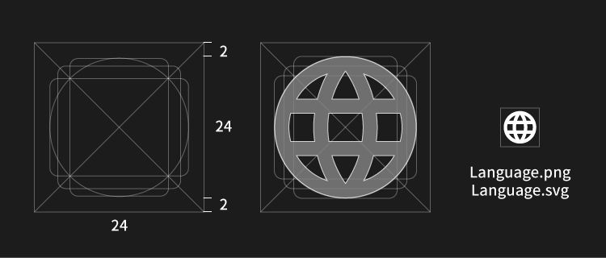
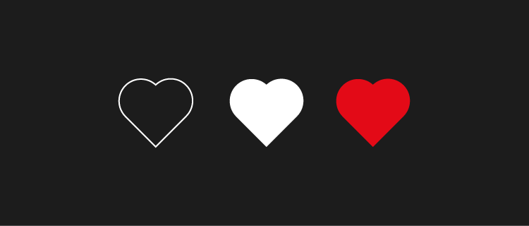

아이콘
디자이너가 사랑하는 아이콘! 당장 드리블이나 비헨스에 가도 훌륭한 아이콘들을 볼 수 있습니다. 서비스 디자인에서 쓰이는 아이콘은 어떨까요? 웹에서 스마트폰으로 넘어오면서 비좁은 스크린에 정보를 표시하기위해 공간을 절약할 수 있는 아이콘이 많이 쓰이고 있습니다.
다들 아는 아이콘
다양한 환경에서 반복적으로 사용되어 언어가 된 아이콘들이 있습니다. 어떤 맥락에 있어도 거의 단어를 읽듯이 받아들여지지만 OS에 따라 같은 의미지만 다른모양인 경우도 있습니다.
처음보는 아이콘
새로운 의미를 표현해야할 때 추상적인 아이콘이 필요합니다. 서비스를 대표하는 심볼을 만들 때나 스크린안에 새로운 기능을 제공할 때 필요합니다. 보통 실제 모양을 본따 표현합니다.
아이콘 만들기
벡터로 제작 - 픽셀 퍼펙션을 확인 한당. 번진다. 안티 얼라이언싱하면 흐려진다. 더 상세한 규칙은 Material Design 에서 확인할 수 있습니다. esp= 인쇄용 make - psds sketch ai export - png svg

크기
4의 배수가 편함 16 24 32 64 128 256 512
표현 방식
Line Solid Shade Cutting

참고